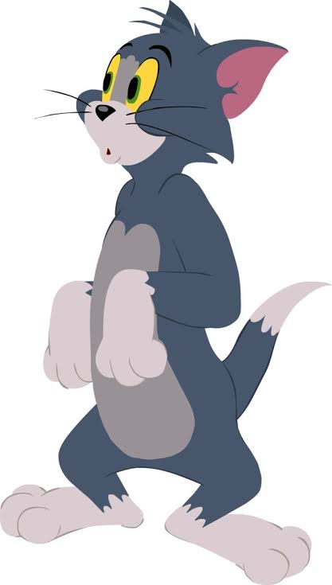
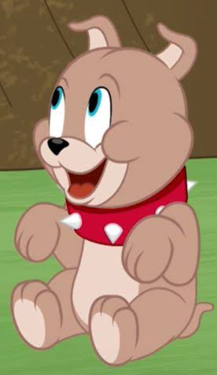
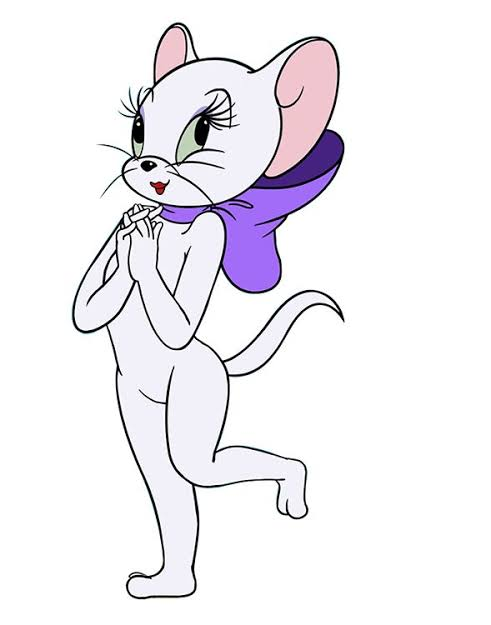
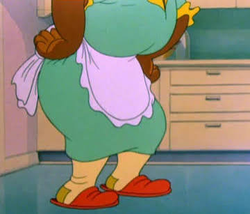

Explore the wonderful characters of Tom and Jerry.
Each character has a unique personality and brings
fun and excitement to the cartoon world.

Tom
Tom is a grey and white domestic cat who is one of the main characters in the Tom and Jerry cartoon series. He is playful, energetic and sometimes a little lazy. Tom spends most of his time trying to catch Jerry, but his plans usually turn into funny disasters. Although he often fights with Jerry, there are moments when they work together and show friendship. His funny expressions and endless chasing adventures make him a memorable character.

Jerry
Jerry is a small brown mouse who lives in the same house as Tom. He is intelligent, quick, brave and very clever. Jerry loves cheese and enjoys playing tricks on Tom. Even though he is much smaller than Tom, he always finds creative ways to escape from him. Jerry's confidence, smart ideas and playful nature make him one of the most loved cartoon characters.

Spike
Spike is a strong grey bulldog who is known for his protective and sometimes aggressive personality. He loves his little son Tyke and always tries to keep him safe. Spike usually becomes angry when Tom disturbs him or causes trouble around his home. Despite his tough appearance, he has a soft heart, especially towards his family. His funny reactions and relationship with Tom make many episodes entertaining.

Cuckoo
Cuckoo is a small yellow bird who appears in some Tom and Jerry episodes. He is innocent, cheerful and playful. Because of his tiny size, he sometimes finds himself in difficult situations and needs help from other characters. Jerry often interacts with him, creating sweet and funny moments. Cuckoo's gentle personality and cute appearance make him memorable.

Tyke
Tyke is the adorable little puppy of Spike. He is small, innocent, playful and very affectionate towards his father. Spike loves Tyke deeply and always wants to protect him from trouble. Tyke enjoys playing, sleeping and spending happy moments with his family. His cute appearance and sweet behaviour make him a lovable character in the series.

Tuffy (Nibbles)
Tuffy, also known as Nibbles, is a tiny grey mouse who is often seen wearing a diaper. He is curious, innocent and full of energy. Tuffy sometimes joins Jerry in his adventures and creates funny situations because of his playful behaviour. Although he is small, he is brave and never afraid to explore new things. His adorable appearance and funny actions make him a special character.

Butch
Butch is a black street cat who often appears as a rival to Tom. He is confident, strong and sometimes mischievous. Butch usually competes with Tom, especially when they both try to impress Toodles Galore. He is also known for his street-smart attitude and funny behaviour. His rivalry with Tom creates many humorous moments throughout the cartoon series.

Quacker
Quacker is a small yellow duckling who is cheerful, innocent and friendly. He often finds himself in funny situations and sometimes needs help from Jerry. Quacker is known for his cute voice and playful personality. He enjoys swimming, exploring and making new friends. His sweet nature and amusing adventures bring a different kind of fun to the Tom and Jerry world.

Toodles Galore
Toodles Galore is a beautiful white female cat who often attracts Tom's attention. She is elegant, charming and confident. Tom frequently tries to impress her with gifts and romantic gestures, but his plans sometimes become complicated because of his rivalry with Butch. Toodles is usually portrayed as a fashionable and graceful character. Her appearances add another interesting element to Tom's adventures.

Mammy Two Shoes
Mammy Two Shoes is the human housekeeper who appears in several classic Tom and Jerry episodes. She is usually seen managing the house and taking care of household activities. She often becomes frustrated when Tom and Jerry create a mess or disturb the peaceful environment. Although viewers usually see only her lower body in the original cartoons, her strong voice and reactions make her an unforgettable character.